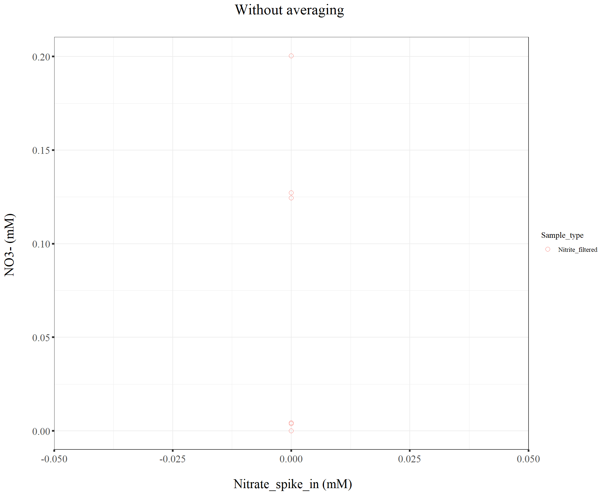
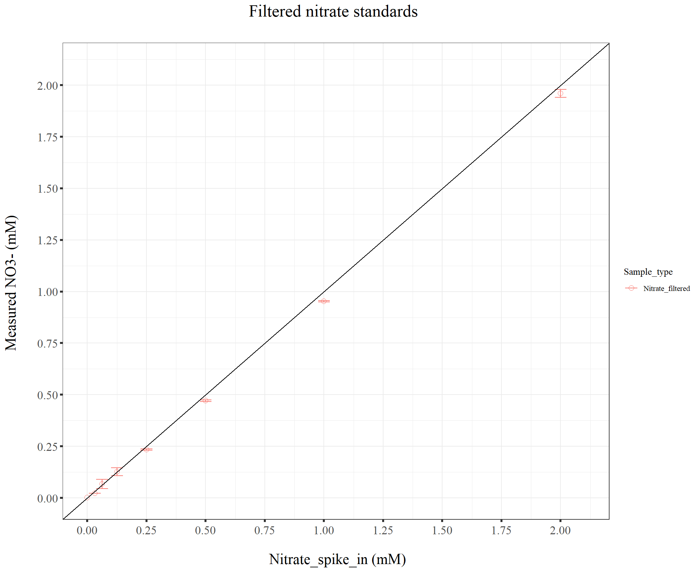
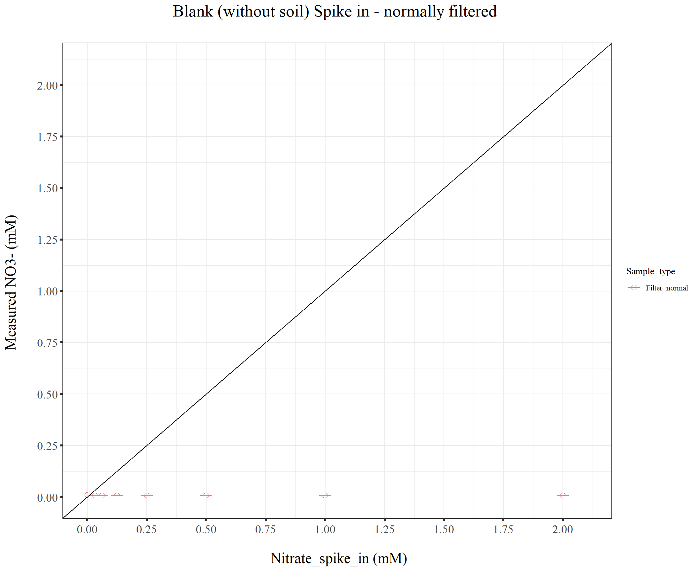

211104_Griess_blank_decline_issue
KiseokUchicago
2021-11-04
Last updated: 2021-11-05
Checks: 7 0
Knit directory: Denit_visualization_R/
This reproducible R Markdown analysis was created with workflowr (version 1.6.2). The Checks tab describes the reproducibility checks that were applied when the results were created. The Past versions tab lists the development history.
Great! Since the R Markdown file has been committed to the Git repository, you know the exact version of the code that produced these results.
Great job! The global environment was empty. Objects defined in the global environment can affect the analysis in your R Markdown file in unknown ways. For reproduciblity it’s best to always run the code in an empty environment.
The command set.seed(20210924) was run prior to running the code in the R Markdown file. Setting a seed ensures that any results that rely on randomness, e.g. subsampling or permutations, are reproducible.
Great job! Recording the operating system, R version, and package versions is critical for reproducibility.
Nice! There were no cached chunks for this analysis, so you can be confident that you successfully produced the results during this run.
Great job! Using relative paths to the files within your workflowr project makes it easier to run your code on other machines.
Great! You are using Git for version control. Tracking code development and connecting the code version to the results is critical for reproducibility.
The results in this page were generated with repository version 924beb7. See the Past versions tab to see a history of the changes made to the R Markdown and HTML files.
Note that you need to be careful to ensure that all relevant files for the analysis have been committed to Git prior to generating the results (you can use wflow_publish or wflow_git_commit). workflowr only checks the R Markdown file, but you know if there are other scripts or data files that it depends on. Below is the status of the Git repository when the results were generated:
Ignored files:
Ignored: .Rhistory
Ignored: .Rproj.user/
Ignored: Figure_211014_external_lab/
Untracked files:
Untracked: 210928_pH.pdf
Untracked: 211014_TN.pdf
Untracked: 211014_drying_oven_TOC.pdf
Untracked: 211014_toc_lab.pdf
Untracked: 211020_df_full_innate.xlsx
Untracked: Figure_210911_TOC/
Untracked: Figure_210924/
Untracked: Figure_210927_TOC/
Untracked: Figure_210929/
Untracked: Figure_211006/
Untracked: Figure_211007/
Untracked: Figure_211008/
Untracked: Figure_211013/
Untracked: data/210911_TOC_sample_plate1.xlsx
Untracked: data/210922_Griess_sample_plate1-investigating.xlsx
Untracked: data/210922_Griess_sample_plate1.xlsx
Untracked: data/210927_TOC_sample_plate1_100ul.xlsx
Untracked: data/210927_TOC_sample_plate1_10ul.xlsx
Untracked: data/210928_Griess_sample_plate1.xlsx
Untracked: data/211005_Griess_sample_plate1.xlsx
Untracked: data/211007_Griess_blank_plate1.xlsx
Untracked: data/211007_Griess_blank_plate2.xlsx
Untracked: data/211008_Griess_blank_plate0.xlsx
Untracked: data/211008_Griess_blank_plate1.xlsx
Untracked: data/211017_Griess_plate0.xlsx
Untracked: data/211017_Griess_plate1.xlsx
Untracked: data/211017_Griess_plate2.xlsx
Untracked: data/211017_Griess_plate3.xlsx
Untracked: data/211017_Griess_plate4.xlsx
Untracked: data/211017_Griess_plate5.xlsx
Untracked: data/211017_Griess_plate6.xlsx
Untracked: data/211017_Griess_plate7.xlsx
Untracked: data/211017_Griess_plate8.xlsx
Untracked: data/211019_Griess_plate1.xlsx
Untracked: data/211020_Griess_plate0.xlsx
Untracked: data/211020_Griess_plate1.xlsx
Untracked: data/211020_df_full_innate.xlsx
Untracked: data/211025_Griess_no3_fit_plate0.xlsx
Untracked: data/211025_Griess_no3_fit_plate1.xlsx
Untracked: data/211025_Griess_plate0.xlsx
Untracked: data/211025_Griess_plate1.xlsx
Untracked: data/211028_Griess_plate1.xlsx
Untracked: data/211028_Griess_plate1_no3_fit.xlsx
Untracked: data/211028_Griess_plate2.xlsx
Untracked: data/211028_Griess_plate2_no3_fit.xlsx
Untracked: data/211028_Griess_plate3.xlsx
Untracked: data/211028_Griess_plate3_no3_fit.xlsx
Untracked: data/211028_Griess_plate4.xlsx
Untracked: data/211028_Griess_plate4_no3_fit.xlsx
Untracked: data/TOC_TN_measurement_2_labs_211014.xlsx
Untracked: data/dry_weight_curve(9.5.21).xlsx
Untracked: data/pH_data(9.14.21).xlsx
Untracked: data/pH_data(9.28.21).xlsx
Untracked: df_NO2NO3.xlsx
Note that any generated files, e.g. HTML, png, CSS, etc., are not included in this status report because it is ok for generated content to have uncommitted changes.
These are the previous versions of the repository in which changes were made to the R Markdown (analysis/211104_Griess_blank_decline_issue.Rmd) and HTML (docs/211104_Griess_blank_decline_issue.html) files. If you’ve configured a remote Git repository (see ?wflow_git_remote), click on the hyperlinks in the table below to view the files as they were in that past version.
| File | Version | Author | Date | Message |
|---|---|---|---|---|
| Rmd | 924beb7 | KiseokUchicago | 2021-11-05 | wflow_publish("analysis/*.Rmd") |
Griess blank slope decline issue (Griess assay)
Researcher: Kiseok Lee
Experiment Date: 10/25/21
Analysis Date: 11/2/21 Lab: Seppe Kuehn
# libraries
library(dplyr)
library(ggplot2)
library(RColorBrewer)
library(vegan)
library(tidyverse)
library(magrittr)
library(readxl)
library(reshape2)
library(gtools)
library(devtools)
library(openxlsx)
library(ape)
library(stringr)
library(tidyr)
library(ggrepel)
library(ggpubr)
## theme for ggplot
mytheme <- theme_bw() +
theme(text = element_text(family="serif")) +
theme(plot.title = element_text(size = 19,hjust = 0.5, family="serif")) +
theme(axis.title.x = element_text(size = 17,hjust = 0.5, family="serif")) +
theme(axis.title.y = element_text(size = 17,hjust = 0.5, family="serif")) +
theme(axis.text.x = element_text(hjust = 0.5, vjust=0.3,size=13, family="serif"))+
theme(axis.text.y = element_text(size=10, family="serif"))+
theme(panel.grid.major = element_blank()) +
theme(panel.grid.minor = element_blank(),panel.background=element_blank(),panel.border=element_blank(),plot.background=element_blank()) +
theme(axis.ticks = element_line(size = 1.1))
mytheme_2d <- theme_bw() +
theme(text = element_text(family="serif")) +
theme(plot.title = element_text(size = 19,hjust = 0.5, family="serif")) +
theme(axis.title.x = element_text(size = 17,hjust = 0.5, family="serif")) +
theme(axis.title.y = element_text(size = 17,hjust = 0.5, family="serif")) +
theme(axis.text.x = element_text(hjust = 0.5, vjust=0.3,size=13, family="serif"))+
theme(axis.text.y = element_text(size=13, family="serif"))+
# theme(panel.grid.major = element_blank()) +
# theme(panel.grid.minor = element_blank(),panel.background=element_blank(),plot.background=element_blank()) +
theme(axis.ticks = element_line(size = 1.1))
# color collection
my_color_collection <- c(
"#CBD588", "#5F7FC7", "orange", "#AD6F3B", "#673770",
"#D14285", "#652926", "#C84248", "#8569D5", "#5E738F",
"#D1A33D", "#8A7C64", "#599861","#616163", "#FFCDB2",
"#6D9F71", "#242F40",
"#CCA43B", "#F92A82", "#ED7B84", "#7EB77F",
"#DEC4A1", "#E5D1D0", '#0E8482', '#C9DAEA', '#337357',
'#95C623', '#E55812', '#04471C', '#F2D7EE', '#D3BCC0',
'#A5668B', '#69306D', '#0E103D', '#1A535C', '#4ECDC4',
'#F7FFF7', '#FF6B6B', '#FFE66D', '#6699CC', '#FFF275',
'#FF8C42', '#FF3C38', '#A23E48', '#000000', '#CF5C36',
'#EEE5E9', '#7C7C7C', '#EFC88B', '#2E5266', '#6E8898',
'#9FB1BC', '#D3D0CB', '#E2C044', '#5BC0EB', '#FDE74C',
'#9BC53D', '#E55934', '#FA7921', "#CD9BCD", "#508578", "#DA5724")
# for git push, use this instead of using wflow_git_push()
# git push -u origin master (in the Git app / in the working directory)1. Import data table from python code
# import file
df_p0 <- openxlsx::read.xlsx("data/211025_Griess_no3_fit_plate0.xlsx")
df_p1 <- openxlsx::read.xlsx("data/211025_Griess_no3_fit_plate1.xlsx")
head(df_p0) Well Sample Extraction_method Extraction_ul
1 A10 Nitrite_filtered_Nitrite_2mM None 100
2 A11 Nitrite_filtered_Nitrite_2mM None 100
3 A12 Nitrite_filtered_Nitrite_2mM None 100
4 B10 Nitrite_filtered_Nitrite_1mM None 100
5 B11 Nitrite_filtered_Nitrite_1mM None 100
6 B12 Nitrite_filtered_Nitrite_1mM None 100
Nitrite_input Nitrate_input Sample_type Plate NO2_OD540 NO2NO3_OD540
1 2 0 Nitrite_filtered P0 3.30080 2.07625
2 2 0 Nitrite_filtered P0 3.30815 2.02445
3 2 0 Nitrite_filtered P0 3.28735 2.01140
4 1 0 Nitrite_filtered P0 1.85520 1.10915
5 1 0 Nitrite_filtered P0 1.81435 NA
6 1 0 Nitrite_filtered P0 1.79155 1.07165
NO2_mM NO2NO3_mM NO3_mM
1 1.8642601 2.0646101 0.200349996
2 1.8692742 1.9964559 0.127181705
3 1.8550992 1.9795201 0.124420840
4 0.9692114 0.9735714 0.004359977
5 0.9460979 NA NA
6 0.9332408 0.9370110 0.003770245colnames(df_p0) [1] "Well" "Sample" "Extraction_method"
[4] "Extraction_ul" "Nitrite_input" "Nitrate_input"
[7] "Sample_type" "Plate" "NO2_OD540"
[10] "NO2NO3_OD540" "NO2_mM" "NO2NO3_mM"
[13] "NO3_mM" dim(df_p0)[1] 24 13head(df_p1) Well Sample Extraction_method Extraction_ul
1 A01 Nitrate_filtered_Nitrate_2mM None 100
2 A02 Nitrate_filtered_Nitrate_2mM None 100
3 A03 Nitrate_filtered_Nitrate_2mM None 100
4 A04 No_filter_Nitrate_2mM 0.5_1_1.5 100
5 A05 No_filter_Nitrate_2mM 0.5_1_1.5 100
6 A06 No_filter_Nitrate_2mM 0.5_1_1.5 100
Nitrite_input Nitrate_input Sample_type Plate NO2_OD540 NO2NO3_OD540
1 0 2 Nitrate_filtered P1 0.00410 2.01605
2 0 2 Nitrate_filtered P1 0.00555 1.98680
3 0 2 Nitrate_filtered P1 0.01030 2.00385
4 0 2 No_filter P1 0.00675 1.90945
5 0 2 No_filter P1 0.00655 1.94100
6 0 2 No_filter P1 0.00500 1.93940
NO2_mM NO2NO3_mM NO3_mM
1 0.006675366 1.985544 1.978869
2 0.007371595 1.947842 1.940470
3 0.009652884 1.969764 1.960111
4 0.007947842 1.850243 1.842295
5 0.007851797 1.889695 1.881843
6 0.007107499 1.887682 1.880575colnames(df_p1) [1] "Well" "Sample" "Extraction_method"
[4] "Extraction_ul" "Nitrite_input" "Nitrate_input"
[7] "Sample_type" "Plate" "NO2_OD540"
[10] "NO2NO3_OD540" "NO2_mM" "NO2NO3_mM"
[13] "NO3_mM" dim(df_p1)[1] 96 13# remove wells
df_p1 %<>% filter(!(Well %in% c("G03","H03")))
dim(df_p1)[1] 94 13# bind two dataframe
df_p <- rbind(df_p0, df_p1)
dim(df_p)[1] 118 13# remove NA
dim(df_p)[1] 118 13df_p <- na.omit(df_p)
dim(df_p)[1] 117 13df_p Well Sample Extraction_method Extraction_ul
1 A10 Nitrite_filtered_Nitrite_2mM None 100
2 A11 Nitrite_filtered_Nitrite_2mM None 100
3 A12 Nitrite_filtered_Nitrite_2mM None 100
4 B10 Nitrite_filtered_Nitrite_1mM None 100
6 B12 Nitrite_filtered_Nitrite_1mM None 100
7 C10 Nitrite_filtered_Nitrite_0.5mM None 100
8 C11 Nitrite_filtered_Nitrite_0.5mM None 100
9 C12 Nitrite_filtered_Nitrite_0.5mM None 100
10 D10 Nitrite_filtered_Nitrite_0.25mM None 100
11 D11 Nitrite_filtered_Nitrite_0.25mM None 100
12 D12 Nitrite_filtered_Nitrite_0.25mM None 100
13 E10 Nitrite_filtered_Nitrite_0.125mM None 100
14 E11 Nitrite_filtered_Nitrite_0.125mM None 100
15 E12 Nitrite_filtered_Nitrite_0.125mM None 100
16 F10 Nitrite_filtered_Nitrite_0.0625mM None 100
17 F11 Nitrite_filtered_Nitrite_0.0625mM None 100
18 F12 Nitrite_filtered_Nitrite_0.0625mM None 100
19 G10 Nitrite_filtered_Nitrite_0.03125mM None 100
20 G11 Nitrite_filtered_Nitrite_0.03125mM None 100
21 G12 Nitrite_filtered_Nitrite_0.03125mM None 100
22 H10 Nitrite_filtered_Nitrite_0mM None 100
23 H11 Nitrite_filtered_Nitrite_0mM None 100
24 H12 Nitrite_filtered_Nitrite_0mM None 100
25 A01 Nitrate_filtered_Nitrate_2mM None 100
26 A02 Nitrate_filtered_Nitrate_2mM None 100
27 A03 Nitrate_filtered_Nitrate_2mM None 100
28 A04 No_filter_Nitrate_2mM 0.5_1_1.5 100
29 A05 No_filter_Nitrate_2mM 0.5_1_1.5 100
30 A06 No_filter_Nitrate_2mM 0.5_1_1.5 100
31 A07 Filter_normal_Nitrate_2mM 0.5_1_1.5 100
32 A08 Filter_normal_Nitrate_2mM 0.5_1_1.5 100
33 A09 Filter_normal_Nitrate_2mM 0.5_1_1.5 100
34 A10 Filter_spaced_Nitrate_2mM 0.5_1_1.5 100
35 A11 Filter_spaced_Nitrate_2mM 0.5_1_1.5 100
36 A12 Filter_spaced_Nitrate_2mM 0.5_1_1.5 100
37 B01 Nitrate_filtered_Nitrate_1mM None 100
38 B02 Nitrate_filtered_Nitrate_1mM None 100
39 B03 Nitrate_filtered_Nitrate_1mM None 100
40 B04 No_filter_Nitrate_1mM 0.5_1_1.5 100
41 B05 No_filter_Nitrate_1mM 0.5_1_1.5 100
42 B06 No_filter_Nitrate_1mM 0.5_1_1.5 100
43 B07 Filter_normal_Nitrate_1mM 0.5_1_1.5 100
44 B08 Filter_normal_Nitrate_1mM 0.5_1_1.5 100
45 B09 Filter_normal_Nitrate_1mM 0.5_1_1.5 100
46 B10 Filter_spaced_Nitrate_1mM 0.5_1_1.5 100
47 B11 Filter_spaced_Nitrate_1mM 0.5_1_1.5 100
48 B12 Filter_spaced_Nitrate_1mM 0.5_1_1.5 100
49 C01 Nitrate_filtered_Nitrate_0.5mM None 100
50 C02 Nitrate_filtered_Nitrate_0.5mM None 100
51 C03 Nitrate_filtered_Nitrate_0.5mM None 100
52 C04 No_filter_Nitrate_0.5mM 0.5_1_1.5 100
53 C05 No_filter_Nitrate_0.5mM 0.5_1_1.5 100
54 C06 No_filter_Nitrate_0.5mM 0.5_1_1.5 100
55 C07 Filter_normal_Nitrate_0.5mM 0.5_1_1.5 100
56 C08 Filter_normal_Nitrate_0.5mM 0.5_1_1.5 100
57 C09 Filter_normal_Nitrate_0.5mM 0.5_1_1.5 100
58 C10 Filter_spaced_Nitrate_0.5mM 0.5_1_1.5 100
59 C11 Filter_spaced_Nitrate_0.5mM 0.5_1_1.5 100
60 C12 Filter_spaced_Nitrate_0.5mM 0.5_1_1.5 100
61 D01 Nitrate_filtered_Nitrate_0.25mM None 100
62 D02 Nitrate_filtered_Nitrate_0.25mM None 100
63 D03 Nitrate_filtered_Nitrate_0.25mM None 100
64 D04 No_filter_Nitrate_0.25mM 0.5_1_1.5 100
65 D05 No_filter_Nitrate_0.25mM 0.5_1_1.5 100
66 D06 No_filter_Nitrate_0.25mM 0.5_1_1.5 100
67 D07 Filter_normal_Nitrate_0.25mM 0.5_1_1.5 100
68 D08 Filter_normal_Nitrate_0.25mM 0.5_1_1.5 100
69 D09 Filter_normal_Nitrate_0.25mM 0.5_1_1.5 100
70 D10 Filter_spaced_Nitrate_0.25mM 0.5_1_1.5 100
71 D11 Filter_spaced_Nitrate_0.25mM 0.5_1_1.5 100
72 D12 Filter_spaced_Nitrate_0.25mM 0.5_1_1.5 100
73 E01 Nitrate_filtered_Nitrate_0.125mM None 100
74 E02 Nitrate_filtered_Nitrate_0.125mM None 100
75 E03 Nitrate_filtered_Nitrate_0.125mM None 100
76 E04 No_filter_Nitrate_0.125mM 0.5_1_1.5 100
77 E05 No_filter_Nitrate_0.125mM 0.5_1_1.5 100
78 E06 No_filter_Nitrate_0.125mM 0.5_1_1.5 100
79 E07 Filter_normal_Nitrate_0.125mM 0.5_1_1.5 100
80 E08 Filter_normal_Nitrate_0.125mM 0.5_1_1.5 100
81 E09 Filter_normal_Nitrate_0.125mM 0.5_1_1.5 100
82 E10 Filter_spaced_Nitrate_0.125mM 0.5_1_1.5 100
83 E11 Filter_spaced_Nitrate_0.125mM 0.5_1_1.5 100
84 E12 Filter_spaced_Nitrate_0.125mM 0.5_1_1.5 100
85 F01 Nitrate_filtered_Nitrate_0.0625mM None 100
86 F02 Nitrate_filtered_Nitrate_0.0625mM None 100
87 F03 Nitrate_filtered_Nitrate_0.0625mM None 100
88 F04 No_filter_Nitrate_0.0625mM 0.5_1_1.5 100
89 F05 No_filter_Nitrate_0.0625mM 0.5_1_1.5 100
90 F06 No_filter_Nitrate_0.0625mM 0.5_1_1.5 100
91 F07 Filter_normal_Nitrate_0.0625mM 0.5_1_1.5 100
92 F08 Filter_normal_Nitrate_0.0625mM 0.5_1_1.5 100
93 F09 Filter_normal_Nitrate_0.0625mM 0.5_1_1.5 100
94 F10 Filter_spaced_Nitrate_0.0625mM 0.5_1_1.5 100
95 F11 Filter_spaced_Nitrate_0.0625mM 0.5_1_1.5 100
96 F12 Filter_spaced_Nitrate_0.0625mM 0.5_1_1.5 100
97 G01 Nitrate_filtered_Nitrate_0.03125mM None 100
98 G02 Nitrate_filtered_Nitrate_0.03125mM None 100
99 G04 No_filter_Nitrate_0.03125mM 0.5_1_1.5 100
100 G05 No_filter_Nitrate_0.03125mM 0.5_1_1.5 100
101 G06 No_filter_Nitrate_0.03125mM 0.5_1_1.5 100
102 G07 Filter_normal_Nitrate_0.03125mM 0.5_1_1.5 100
103 G08 Filter_normal_Nitrate_0.03125mM 0.5_1_1.5 100
104 G09 Filter_normal_Nitrate_0.03125mM 0.5_1_1.5 100
105 G10 Filter_spaced_Nitrate_0.03125mM 0.5_1_1.5 100
106 G11 Filter_spaced_Nitrate_0.03125mM 0.5_1_1.5 100
107 G12 Filter_spaced_Nitrate_0.03125mM 0.5_1_1.5 100
108 H01 Nitrate_filtered_Nitrate_0mM None 100
109 H02 Nitrate_filtered_Nitrate_0mM None 100
110 H04 No_filter_Nitrate_0mM 0.5_1_1.5 100
111 H05 No_filter_Nitrate_0mM 0.5_1_1.5 100
112 H06 No_filter_Nitrate_0mM 0.5_1_1.5 100
113 H07 Filter_normal_Nitrate_0mM 0.5_1_1.5 100
114 H08 Filter_normal_Nitrate_0mM 0.5_1_1.5 100
115 H09 Filter_normal_Nitrate_0mM 0.5_1_1.5 100
116 H10 Filter_spaced_Nitrate_0mM 0.5_1_1.5 100
117 H11 Filter_spaced_Nitrate_0mM 0.5_1_1.5 100
118 H12 Filter_spaced_Nitrate_0mM 0.5_1_1.5 100
Nitrite_input Nitrate_input Sample_type Plate NO2_OD540 NO2NO3_OD540
1 2.00000 0.00000 Nitrite_filtered P0 3.30080 2.07625
2 2.00000 0.00000 Nitrite_filtered P0 3.30815 2.02445
3 2.00000 0.00000 Nitrite_filtered P0 3.28735 2.01140
4 1.00000 0.00000 Nitrite_filtered P0 1.85520 1.10915
6 1.00000 0.00000 Nitrite_filtered P0 1.79155 1.07165
7 0.50000 0.00000 Nitrite_filtered P0 0.92735 0.53755
8 0.50000 0.00000 Nitrite_filtered P0 0.92245 0.53365
9 0.50000 0.00000 Nitrite_filtered P0 0.92025 0.54495
10 0.25000 0.00000 Nitrite_filtered P0 0.45900 0.26305
11 0.25000 0.00000 Nitrite_filtered P0 0.45495 0.26295
12 0.25000 0.00000 Nitrite_filtered P0 0.46650 0.26680
13 0.12500 0.00000 Nitrite_filtered P0 0.23060 0.12965
14 0.12500 0.00000 Nitrite_filtered P0 0.22495 0.12385
15 0.12500 0.00000 Nitrite_filtered P0 0.23025 0.12880
16 0.06250 0.00000 Nitrite_filtered P0 0.11570 0.06340
17 0.06250 0.00000 Nitrite_filtered P0 0.11485 0.06155
18 0.06250 0.00000 Nitrite_filtered P0 0.11765 0.06665
19 0.03125 0.00000 Nitrite_filtered P0 0.06050 0.03055
20 0.03125 0.00000 Nitrite_filtered P0 0.05915 0.02955
21 0.03125 0.00000 Nitrite_filtered P0 0.05905 0.03325
22 0.00000 0.00000 Nitrite_filtered P0 0.00920 0.00065
23 0.00000 0.00000 Nitrite_filtered P0 0.00975 0.00000
24 0.00000 0.00000 Nitrite_filtered P0 0.00990 0.00375
25 0.00000 2.00000 Nitrate_filtered P1 0.00410 2.01605
26 0.00000 2.00000 Nitrate_filtered P1 0.00555 1.98680
27 0.00000 2.00000 Nitrate_filtered P1 0.01030 2.00385
28 0.00000 2.00000 No_filter P1 0.00675 1.90945
29 0.00000 2.00000 No_filter P1 0.00655 1.94100
30 0.00000 2.00000 No_filter P1 0.00500 1.93940
31 0.00000 2.00000 Filter_normal P1 0.00695 1.97155
32 0.00000 2.00000 Filter_normal P1 0.00475 1.95075
33 0.00000 2.00000 Filter_normal P1 0.00475 1.99695
34 0.00000 2.00000 Filter_spaced P1 0.00840 1.99060
35 0.00000 2.00000 Filter_spaced P1 0.00525 1.95495
36 0.00000 2.00000 Filter_spaced P1 0.00635 1.99645
37 0.00000 1.00000 Nitrate_filtered P1 0.00340 1.09875
38 0.00000 1.00000 Nitrate_filtered P1 0.00820 1.09315
39 0.00000 1.00000 Nitrate_filtered P1 0.01640 1.10025
40 0.00000 1.00000 No_filter P1 0.00430 1.06770
41 0.00000 1.00000 No_filter P1 0.00430 1.07115
42 0.00000 1.00000 No_filter P1 0.00375 1.07230
43 0.00000 1.00000 Filter_normal P1 0.00410 1.09175
44 0.00000 1.00000 Filter_normal P1 0.00465 1.06615
45 0.00000 1.00000 Filter_normal P1 0.00305 1.08615
46 0.00000 1.00000 Filter_spaced P1 0.00420 1.10065
47 0.00000 1.00000 Filter_spaced P1 0.00395 1.08815
48 0.00000 1.00000 Filter_spaced P1 0.00350 1.06765
49 0.00000 0.50000 Nitrate_filtered P1 0.00865 0.57395
50 0.00000 0.50000 Nitrate_filtered P1 0.00995 0.57180
51 0.00000 0.50000 Nitrate_filtered P1 0.01470 0.58300
52 0.00000 0.50000 No_filter P1 0.00605 0.55855
53 0.00000 0.50000 No_filter P1 0.00720 0.56820
54 0.00000 0.50000 No_filter P1 0.00605 0.56850
55 0.00000 0.50000 Filter_normal P1 0.00375 0.57400
56 0.00000 0.50000 Filter_normal P1 0.00585 0.56605
57 0.00000 0.50000 Filter_normal P1 0.00745 0.57085
58 0.00000 0.50000 Filter_spaced P1 0.00685 0.57935
59 0.00000 0.50000 Filter_spaced P1 0.00695 0.58440
60 0.00000 0.50000 Filter_spaced P1 0.00805 0.58780
61 0.00000 0.25000 Nitrate_filtered P1 0.00810 0.30175
62 0.00000 0.25000 Nitrate_filtered P1 0.00975 0.29535
63 0.00000 0.25000 Nitrate_filtered P1 0.01520 0.29860
64 0.00000 0.25000 No_filter P1 0.00610 0.28625
65 0.00000 0.25000 No_filter P1 0.00515 0.29305
66 0.00000 0.25000 No_filter P1 0.00670 0.29000
67 0.00000 0.25000 Filter_normal P1 0.00560 0.30220
68 0.00000 0.25000 Filter_normal P1 0.00735 0.29520
69 0.00000 0.25000 Filter_normal P1 0.00580 0.30170
70 0.00000 0.25000 Filter_spaced P1 0.00775 0.31035
71 0.00000 0.25000 Filter_spaced P1 0.00755 0.30920
72 0.00000 0.25000 Filter_spaced P1 0.00700 0.31235
73 0.00000 0.12500 Nitrate_filtered P1 0.00875 0.15510
74 0.00000 0.12500 Nitrate_filtered P1 0.00875 0.15030
75 0.00000 0.12500 Nitrate_filtered P1 0.01735 0.19880
76 0.00000 0.12500 No_filter P1 0.00730 0.15075
77 0.00000 0.12500 No_filter P1 0.00610 0.15055
78 0.00000 0.12500 No_filter P1 0.00525 0.15200
79 0.00000 0.12500 Filter_normal P1 0.00580 0.15410
80 0.00000 0.12500 Filter_normal P1 0.00510 0.15445
81 0.00000 0.12500 Filter_normal P1 0.00590 0.15940
82 0.00000 0.12500 Filter_spaced P1 0.00795 0.16495
83 0.00000 0.12500 Filter_spaced P1 0.00565 0.16335
84 0.00000 0.12500 Filter_spaced P1 0.00670 0.16985
85 0.00000 0.06250 Nitrate_filtered P1 0.00865 0.07920
86 0.00000 0.06250 Nitrate_filtered P1 0.00855 0.07510
87 0.00000 0.06250 Nitrate_filtered P1 0.01350 0.12890
88 0.00000 0.06250 No_filter P1 0.00725 0.08055
89 0.00000 0.06250 No_filter P1 0.00605 0.07995
90 0.00000 0.06250 No_filter P1 0.00570 0.07990
91 0.00000 0.06250 Filter_normal P1 0.00590 0.07905
92 0.00000 0.06250 Filter_normal P1 0.00630 0.08380
93 0.00000 0.06250 Filter_normal P1 0.00685 0.08335
94 0.00000 0.06250 Filter_spaced P1 0.00735 0.08805
95 0.00000 0.06250 Filter_spaced P1 0.00595 0.08900
96 0.00000 0.06250 Filter_spaced P1 0.00645 0.09910
97 0.00000 0.03125 Nitrate_filtered P1 0.00955 0.03725
98 0.00000 0.03125 Nitrate_filtered P1 0.01070 0.03885
99 0.00000 0.03125 No_filter P1 0.00855 0.04345
100 0.00000 0.03125 No_filter P1 0.00765 0.04415
101 0.00000 0.03125 No_filter P1 0.00740 0.04495
102 0.00000 0.03125 Filter_normal P1 0.00735 0.04365
103 0.00000 0.03125 Filter_normal P1 0.00610 0.04775
104 0.00000 0.03125 Filter_normal P1 0.00955 0.04915
105 0.00000 0.03125 Filter_spaced P1 0.00840 0.05290
106 0.00000 0.03125 Filter_spaced P1 0.00670 0.05290
107 0.00000 0.03125 Filter_spaced P1 0.00690 0.06080
108 0.00000 0.00000 Nitrate_filtered P1 0.01365 0.00950
109 0.00000 0.00000 Nitrate_filtered P1 0.01020 0.01580
110 0.00000 0.00000 No_filter P1 0.00645 0.00595
111 0.00000 0.00000 No_filter P1 0.00710 0.00610
112 0.00000 0.00000 No_filter P1 0.00760 0.00645
113 0.00000 0.00000 Filter_normal P1 0.00875 0.01045
114 0.00000 0.00000 Filter_normal P1 0.01085 0.00995
115 0.00000 0.00000 Filter_normal P1 0.00890 0.00925
116 0.00000 0.00000 Filter_spaced P1 0.01265 0.01375
117 0.00000 0.00000 Filter_spaced P1 0.00780 0.01305
118 0.00000 0.00000 Filter_spaced P1 0.01125 0.01845
NO2_mM NO2NO3_mM NO3_mM
1 1.864260088 2.064610084 2.003500e-01
2 1.869274239 1.996455944 1.271817e-01
3 1.855099224 1.979520064 1.244208e-01
4 0.969211440 0.973571417 4.359977e-03
6 0.933240776 0.937011021 3.770245e-03
7 0.466813969 0.447329493 0.000000e+00
8 0.464275868 0.443942958 0.000000e+00
9 0.463136673 0.453762001 0.000000e+00
10 0.229023240 0.214690574 0.000000e+00
11 0.227007668 0.214607839 0.000000e+00
12 0.232757551 0.217794119 0.000000e+00
13 0.116383328 0.105539816 0.000000e+00
14 0.113622971 0.100848119 0.000000e+00
15 0.116212296 0.104851965 0.000000e+00
16 0.060488554 0.052208519 0.000000e+00
17 0.060076929 0.050727342 0.000000e+00
18 0.061432973 0.054811640 0.000000e+00
19 0.033813393 0.025971847 0.000000e+00
20 0.033162436 0.025175291 0.000000e+00
21 0.033114220 0.028123174 0.000000e+00
22 0.009124512 0.002208514 0.000000e+00
23 0.009388692 0.001693148 0.000000e+00
24 0.009460744 0.004667128 0.000000e+00
25 0.006675366 1.985544150 1.978869e+00
26 0.007371595 1.947841848 1.940470e+00
27 0.009652884 1.969763661 1.960111e+00
28 0.007947842 1.850242901 1.842295e+00
29 0.007851797 1.889694593 1.881843e+00
30 0.007107499 1.887682235 1.880575e+00
31 0.008043888 1.928362456 1.920319e+00
32 0.006987459 1.901984711 1.894997e+00
33 0.006987459 1.960873676 1.953886e+00
34 0.008740269 1.952714454 1.943974e+00
35 0.007227541 1.907293464 1.900066e+00
36 0.007755754 1.960230450 1.952475e+00
37 0.006339283 0.963399672 9.570604e-01
38 0.008644212 0.957932909 9.492887e-01
39 0.012583757 0.964865209 9.522815e-01
40 0.006771393 0.933178636 9.264072e-01
41 0.006771393 0.936525714 9.297543e-01
42 0.006507322 0.937642004 9.311347e-01
43 0.006675366 0.956567343 9.498920e-01
44 0.006939444 0.931675750 9.247363e-01
45 0.006171249 0.951109567 9.449383e-01
46 0.006723379 0.965256107 9.585327e-01
47 0.006603347 0.953057949 9.464546e-01
48 0.006387294 0.933130148 9.267429e-01
49 0.008860342 0.479056656 4.701963e-01
50 0.009484761 0.477176619 4.676919e-01
51 0.011766819 0.486978686 4.752119e-01
52 0.007611691 0.465607156 4.579955e-01
53 0.008163949 0.474030359 4.658664e-01
54 0.007611691 0.474292466 4.666808e-01
55 0.006507322 0.479100387 4.725931e-01
56 0.007515651 0.472152362 4.646367e-01
57 0.008284011 0.476346149 4.680621e-01
58 0.007995865 0.483781980 4.757861e-01
59 0.008043888 0.488205408 4.801615e-01
60 0.008572170 0.491185945 4.826138e-01
61 0.008596184 0.246814471 2.382183e-01
62 0.009388692 0.241487354 2.320987e-01
63 0.012007084 0.244191802 2.321847e-01
64 0.007635701 0.233922887 2.262872e-01
65 0.007179524 0.239574346 2.323948e-01
66 0.007923831 0.237038689 2.291149e-01
67 0.007395604 0.247189254 2.397937e-01
68 0.008235986 0.241362570 2.331266e-01
69 0.007491642 0.246772831 2.392812e-01
70 0.008428089 0.253981994 2.455539e-01
71 0.008332036 0.253022933 2.446909e-01
72 0.008067900 0.255650377 2.475825e-01
73 0.008908372 0.126178905 1.172705e-01
74 0.008908372 0.122279729 1.133714e-01
75 0.013040327 0.161819072 1.487787e-01
76 0.008211973 0.122645147 1.144332e-01
77 0.007635701 0.122482736 1.148470e-01
78 0.007227541 0.123660338 1.164328e-01
79 0.007491642 0.125366325 1.178747e-01
80 0.007155515 0.125650713 1.184952e-01
81 0.007539661 0.129674512 1.221349e-01
82 0.008524142 0.134189916 1.256658e-01
83 0.007419613 0.132887757 1.254681e-01
84 0.007923831 0.138179899 1.302561e-01
85 0.008860342 0.064876305 5.601596e-02
86 0.008812313 0.061586039 5.277373e-02
87 0.011190220 0.104932884 9.374266e-02
88 0.008187961 0.065960155 5.777219e-02
89 0.007611691 0.065478415 5.786672e-02
90 0.007443623 0.065438272 5.799465e-02
91 0.007539661 0.064755891 5.721623e-02
92 0.007731743 0.068570381 6.083864e-02
93 0.007995865 0.068208884 6.021302e-02
94 0.008235986 0.071985794 6.374981e-02
95 0.007563671 0.072749557 6.518589e-02
96 0.007803775 0.080876732 7.307296e-02
97 0.009292625 0.031312000 2.201937e-02
98 0.009845031 0.032588092 2.274306e-02
99 0.008812313 0.036258645 2.744633e-02
100 0.008380062 0.036817440 2.843738e-02
101 0.008259998 0.037456138 2.919614e-02
102 0.008235986 0.036418294 2.818231e-02
103 0.007635701 0.039692218 3.205652e-02
104 0.009292625 0.040810627 3.151800e-02
105 0.008740269 0.043807585 3.506732e-02
106 0.007923831 0.043807585 3.588375e-02
107 0.008019877 0.050126988 4.210711e-02
108 0.011262292 0.009230601 0.000000e+00
109 0.009604848 0.014235274 4.630426e-03
110 0.007803775 0.006412671 0.000000e+00
111 0.008115924 0.006531706 0.000000e+00
112 0.008356049 0.006809468 0.000000e+00
113 0.008908372 0.009984959 1.076587e-03
114 0.009917087 0.009587915 0.000000e+00
115 0.008980418 0.009032104 5.168637e-05
116 0.010781829 0.012606230 1.824401e-03
117 0.008452102 0.012050090 3.597988e-03
118 0.010109242 0.016341885 6.232643e-03# remove 4mM spike ins because it is out of standard curve range
# df_p %<>% filter(!(Nitrate_input == 4))
# dim(df_p)
# Check
# df_p1 %>% filter(Well =="B02")
# df_p1 %>% filter(Well =="H04")2. Get average and standard deviation
# average and standard deviation
# plot to see
ggplot(df_p, aes(x=Nitrate_input, y=NO3_mM, color=Sample_type, group=Sample_type)) +
geom_point(size=2.5, shape=21) +
# geom_line(size=1)+
scale_fill_brewer(palette='Set2') +
ylab("NO3- (mM) \n") +
xlab("\n Nitrate_spike_in (mM)") +
# scale_y_continuous(breaks = seq(0,0.3,0.05), limits=c(0, 0.3))+
ggtitle("Without averaging \n") +
mytheme_2d# plot to see
ggplot(df_p0, aes(x=Nitrate_input, y=NO3_mM, color=Sample_type, group=Sample_type)) +
geom_point(size=2.5, shape=21) +
# geom_line(size=1)+
scale_fill_brewer(palette='Set2') +
ylab("NO3- (mM) \n") +
xlab("\n Nitrate_spike_in (mM)") +
# scale_y_continuous(breaks = seq(0,0.3,0.05), limits=c(0, 0.3))+
ggtitle("Without averaging \n") +
mytheme_2d
# plot to see
ggplot(df_p1, aes(x=Nitrate_input, y=NO3_mM, color=Sample_type, group=Sample_type)) +
geom_point(size=2.5, shape=21) +
# geom_line(size=1)+
scale_fill_brewer(palette='Set2') +
ylab("NO3- (mM) \n") +
xlab("\n Nitrate_spike_in (mM)") +
# scale_y_continuous(breaks = seq(0,0.3,0.05), limits=c(0, 0.3))+
ggtitle("Without averaging \n") +
mytheme_2d# average Biological replicate
df_NO2NO3 <- df_p %>% group_by(Sample, Extraction_method, Extraction_ul, Nitrite_input, Nitrate_input, Sample_type) %>% summarise(Ave_NO2_mM = mean(NO2_mM), Std_NO2_mM = sd(NO2_mM), Ave_NO3_mM = mean(NO3_mM), Std_NO3_mM = sd(NO3_mM)) %>% ungroup()
dim(df_NO2NO3)[1] 40 10# Factor in orders
# df_NO2NO3$Sample_type <- factor(df_NO2NO3$Sample_type, levels = c("Soil","Blank"))
# df_NO2NO3$Pipet <- factor(df_NO2NO3$Pipet, levels = c("300pipet","1200pipet"))
# Testing negative samples
# df_neg <- df_NO2NO3 %>% filter(Sample_type == "Blank", Nitrate_input == 0)
# df_neg
# close to zero
# plot to see
ggplot(df_NO2NO3, aes(x=Nitrate_input, y=Ave_NO3_mM, color=Sample_type, group=Sample_type)) +
geom_point(size=2.5, shape=21) +
# geom_line(size=1)+
geom_errorbar(aes(ymin=Ave_NO3_mM - Std_NO3_mM, ymax=Ave_NO3_mM + Std_NO3_mM), width=.05)+
scale_fill_brewer(palette='Set2') +
ylab("NO3- (mM) \n") +
xlab("\n Nitrate_spike_in (mM)") +
# scale_y_continuous(breaks = seq(0,0.3,0.05), limits=c(0, 0.3))+
ggtitle("After averaging with technical replicates \n") +
mytheme_2d# average biological replicates
# standard deviation is the standard deviation of the technical replicate average
dim(df_NO2NO3)[1] 40 10head(df_NO2NO3)# A tibble: 6 x 10
Sample Extraction_meth~ Extraction_ul Nitrite_input Nitrate_input Sample_type
<chr> <chr> <dbl> <dbl> <dbl> <chr>
1 Filter~ 0.5_1_1.5 100 0 0.0312 Filter_nor~
2 Filter~ 0.5_1_1.5 100 0 0.0625 Filter_nor~
3 Filter~ 0.5_1_1.5 100 0 0.125 Filter_nor~
4 Filter~ 0.5_1_1.5 100 0 0.25 Filter_nor~
5 Filter~ 0.5_1_1.5 100 0 0.5 Filter_nor~
6 Filter~ 0.5_1_1.5 100 0 0 Filter_nor~
# ... with 4 more variables: Ave_NO2_mM <dbl>, Std_NO2_mM <dbl>,
# Ave_NO3_mM <dbl>, Std_NO3_mM <dbl>3. Plot per method
3.1. Scatter plots for blanks and spike ins
- filtered standard - nitrite
- filtered standard - nitrate
- blank not filtered
- blank filtered
- blank filtered - spaced
# (1) filtered standard - nitrite
df_std_filt_no2 <- df_NO2NO3 %>% filter(Sample_type == "Nitrite_filtered")
colnames(df_std_filt_no2) [1] "Sample" "Extraction_method" "Extraction_ul"
[4] "Nitrite_input" "Nitrate_input" "Sample_type"
[7] "Ave_NO2_mM" "Std_NO2_mM" "Ave_NO3_mM"
[10] "Std_NO3_mM" dim(df_std_filt_no2)[1] 8 10ggplot(df_std_filt_no2, aes(x=Nitrate_input, y=Ave_NO3_mM, color=Sample_type, group=Sample_type)) +
geom_point(size=2.5, shape=21) +
# geom_line(size=1)+
geom_errorbar(aes(ymin=Ave_NO3_mM - Std_NO3_mM, ymax=Ave_NO3_mM + Std_NO3_mM), width=.05)+
# scale_color_brewer(palette='Set2') +
# scale_color_manual(values = c("deepskyblue4","maroon2"))+
ylab("Measured NO3- (mM) \n") +
xlab("\n Nitrate_spike_in (mM)") +
scale_y_continuous(breaks = seq(0,2.1,0.25), limits=c(0, 2.1))+
scale_x_continuous(breaks = seq(0,2.1,0.25), limits=c(0, 2.1))+
ggtitle("Filtered nitrite standards \n") +
geom_abline(slope = 1, intercept=0, show.legend = "y=x")+
mytheme_2dggplot(df_std_filt_no2, aes(x=Nitrite_input, y=Ave_NO3_mM, color=Sample_type, group=Sample_type)) +
geom_point(size=2.5, shape=21) +
# geom_line(size=1)+
geom_errorbar(aes(ymin=Ave_NO3_mM - Std_NO3_mM, ymax=Ave_NO3_mM + Std_NO3_mM), width=.05)+
# scale_color_brewer(palette='Set2') +
# scale_color_manual(values = c("deepskyblue4","maroon2"))+
ylab("Measured NO3- (mM) \n") +
xlab("\n Nitrite_spike_in (mM)") +
scale_y_continuous(breaks = seq(0,2.1,0.25), limits=c(0, 2.1))+
scale_x_continuous(breaks = seq(0,2.1,0.25), limits=c(0, 2.1))+
ggtitle("Filtered nitrite standards \n") +
geom_abline(slope = 1, intercept=0, show.legend = "y=x")+
mytheme_2d
ggplot(df_std_filt_no2, aes(x=Nitrite_input, y=Ave_NO2_mM, color=Sample_type, group=Sample_type)) +
geom_point(size=2.5, shape=21) +
# geom_line(size=1)+
geom_errorbar(aes(ymin=Ave_NO2_mM - Std_NO2_mM, ymax=Ave_NO2_mM + Std_NO2_mM), width=.05)+
# scale_color_brewer(palette='Set2') +
# scale_color_manual(values = c("deepskyblue4","maroon2"))+
ylab("Measured NO2- (mM) \n") +
xlab("\n Nitrite_spike_in (mM)") +
scale_y_continuous(breaks = seq(0,2.1,0.25), limits=c(0, 2.1))+
scale_x_continuous(breaks = seq(0,2.1,0.25), limits=c(0, 2.1))+
ggtitle("Filtered nitrite standards \n") +
geom_abline(slope = 1, intercept=0, show.legend = "y=x")+
mytheme_2d# Get regression line on raw data (not averaged)
df_no2_filt <- df_p %>% filter(Sample_type == "Nitrite_filtered")
dim(df_no2_filt)[1] 23 13fit.no2_filt <- lm(NO2_mM ~ Nitrite_input, df_no2_filt)
# Plot fitted linear regression line
ggplot(df_no2_filt, aes(x=Nitrite_input, y=NO2_mM, color=Sample_type, group=Sample_type)) +
geom_point(size=2.5, shape=21) +
# geom_line(size=1)+
# geom_errorbar(aes(ymin=NO3_mM - sd_NO3_mM, ymax=NO3_mM + sd_NO3_mM), width=.05)+
# scale_color_brewer(palette='Set2') +
scale_color_manual(values = c("maroon2","deepskyblue4"))+
ylab("Measured NO2- (mM) \n") +
xlab("\n Nitrite_spike_in (mM)") +
scale_y_continuous(breaks = seq(0,2.1,0.25), limits=c(0, 2.1))+
scale_x_continuous(breaks = seq(0,2.1,0.25), limits=c(0, 2.1))+
# geom_text_repel(aes(label = round(NO3_mM,3)), size = 3,family="serif", show.legend = FALSE)+
ggtitle("Filtered nitrite standards \n") +
geom_abline(slope = 1, intercept=0, show.legend = "y=x")+
# regression line
geom_abline(slope = coef(fit.no2_filt)[[2]], intercept = coef(fit.no2_filt)[[1]],
color = "maroon2") +
# show equation
# stat_cor(aes(label = paste(..rr.label.., ..p.label.., sep = "~`,`~"))) +
annotate("text",x=1,y=2, label= paste0("y = ", round(coef(fit.no2_filt)[[1]],3),"+",round(coef(fit.no2_filt)[[2]],3),"x"), color = "maroon2") +
mytheme_2d## overlay plots
plot(df_no2_filt$Nitrite_input, df_no2_filt$NO2NO3_mM, col='orange', pch=19, xlab=NA,ylab=NA)
points(df_no2_filt$Nitrite_input, df_no2_filt$NO2_mM, col='blue', pch=19)
points(df_no2_filt$Nitrite_input, df_no2_filt$NO3_mM, col='green', pch=19)
legend(0, 2, legend=c('NO2NO3', 'NO2', 'NO3'), pch=c(19, 19), col=c('orange', 'blue','green'), bty = "n")
abline(0,1, lty='dashed', col = "gray60")
title(main="Concentration prediction of filtered nitrite standards",
xlab="Known nitrite concentration (mM)", ylab="Predicted NO2,NO3 concentration (mM)")# wow... it's pretty weird... let's see if it is different for nitrate
# (2) filtered standard - nitrate
df_std_filt_no3 <- df_NO2NO3 %>% filter(Sample_type == "Nitrate_filtered")
colnames(df_std_filt_no3) [1] "Sample" "Extraction_method" "Extraction_ul"
[4] "Nitrite_input" "Nitrate_input" "Sample_type"
[7] "Ave_NO2_mM" "Std_NO2_mM" "Ave_NO3_mM"
[10] "Std_NO3_mM" dim(df_std_filt_no3)[1] 8 10ggplot(df_std_filt_no3, aes(x=Nitrate_input, y=Ave_NO3_mM, color=Sample_type, group=Sample_type)) +
geom_point(size=2.5, shape=21) +
# geom_line(size=1)+
geom_errorbar(aes(ymin=Ave_NO3_mM - Std_NO3_mM, ymax=Ave_NO3_mM + Std_NO3_mM), width=.05)+
# scale_color_brewer(palette='Set2') +
# scale_color_manual(values = c("deepskyblue4","maroon2"))+
ylab("Measured NO3- (mM) \n") +
xlab("\n Nitrate_spike_in (mM)") +
scale_y_continuous(breaks = seq(0,2.1,0.25), limits=c(0, 2.1))+
scale_x_continuous(breaks = seq(0,2.1,0.25), limits=c(0, 2.1))+
ggtitle("Filtered nitrate standards \n") +
geom_abline(slope = 1, intercept=0, show.legend = "y=x")+
mytheme_2d
# Get regression line on raw data (not averaged)
df_no3_filt <- df_p %>% filter(Sample_type == "Nitrate_filtered")
dim(df_no3_filt)[1] 22 13fit.no3_filt <- lm(NO3_mM ~ Nitrate_input, df_no3_filt)
# Plot fitted linear regression line
ggplot(df_no3_filt, aes(x=Nitrate_input, y=NO3_mM, color=Sample_type, group=Sample_type)) +
geom_point(size=2.5, shape=21) +
# geom_line(size=1)+
# geom_errorbar(aes(ymin=NO3_mM - sd_NO3_mM, ymax=NO3_mM + sd_NO3_mM), width=.05)+
# scale_color_brewer(palette='Set2') +
scale_color_manual(values = c("maroon2","deepskyblue4"))+
ylab("Measured NO3- (mM) \n") +
xlab("\n Nitrate_spike_in (mM)") +
scale_y_continuous(breaks = seq(0,2.1,0.25), limits=c(0, 2.1))+
scale_x_continuous(breaks = seq(0,2.1,0.25), limits=c(0, 2.1))+
# geom_text_repel(aes(label = round(NO3_mM,3)), size = 3,family="serif", show.legend = FALSE)+
ggtitle("Filtered nitrate standards \n") +
geom_abline(slope = 1, intercept=0, show.legend = "y=x")+
# regression line
geom_abline(slope = coef(fit.no3_filt)[[2]], intercept = coef(fit.no3_filt)[[1]],
color = "maroon2") +
# show equation
# stat_cor(aes(label = paste(..rr.label.., ..p.label.., sep = "~`,`~"))) +
annotate("text",x=1,y=2, label= paste0("y = ", round(coef(fit.no3_filt)[[1]],3),"+",round(coef(fit.no3_filt)[[2]],3),"x"), color = "maroon2") +
mytheme_2dggplot(df_std_filt_no3, aes(x=Nitrate_input, y=Ave_NO2_mM, color=Sample_type, group=Sample_type)) +
geom_point(size=2.5, shape=21) +
# geom_line(size=1)+
geom_errorbar(aes(ymin=Ave_NO2_mM - Std_NO2_mM, ymax=Ave_NO2_mM + Std_NO2_mM), width=.05)+
# scale_color_brewer(palette='Set2') +
# scale_color_manual(values = c("deepskyblue4","maroon2"))+
ylab("Measured NO2- (mM) \n") +
xlab("\n Nitrate_spike_in (mM)") +
scale_y_continuous(breaks = seq(0,2.1,0.25), limits=c(0, 2.1))+
scale_x_continuous(breaks = seq(0,2.1,0.25), limits=c(0, 2.1))+
ggtitle("Filtered nitrate standards \n") +
geom_abline(slope = 1, intercept=0, show.legend = "y=x")+
mytheme_2d## overlay plots
plot(df_no3_filt$Nitrate_input, df_no3_filt$NO2NO3_mM, col='orange', pch=19, xlab=NA,ylab=NA)
points(df_no3_filt$Nitrate_input, df_no3_filt$NO2_mM, col='blue', pch=19)
points(df_no3_filt$Nitrate_input, df_no3_filt$NO3_mM, col='green', pch=19)
legend(0, 2, legend=c('NO2NO3', 'NO2', 'NO3'), pch=c(19, 19), col=c('orange', 'blue','green'), bty = "n")
abline(0,1, lty='dashed', col = "gray60")
title(main="Concentration prediction of filtered nitrate standards",
xlab="Known nitrate concentration (mM)", ylab="Predicted NO2,NO3 concentration (mM)")
# (3) blank not filtered
df_blank_no_filt <- df_NO2NO3 %>% filter(Sample_type == "No_filter")
colnames(df_blank_no_filt) [1] "Sample" "Extraction_method" "Extraction_ul"
[4] "Nitrite_input" "Nitrate_input" "Sample_type"
[7] "Ave_NO2_mM" "Std_NO2_mM" "Ave_NO3_mM"
[10] "Std_NO3_mM" dim(df_blank_no_filt)[1] 8 10ggplot(df_blank_no_filt, aes(x=Nitrate_input, y=Ave_NO3_mM, color=Sample_type, group=Sample_type)) +
geom_point(size=2.5, shape=21) +
# geom_line(size=1)+
geom_errorbar(aes(ymin=Ave_NO3_mM - Std_NO3_mM, ymax=Ave_NO3_mM + Std_NO3_mM), width=.05)+
# scale_color_brewer(palette='Set2') +
# scale_color_manual(values = c("deepskyblue4","maroon2"))+
ylab("Measured NO3- (mM) \n") +
xlab("\n Nitrate_spike_in (mM)") +
scale_y_continuous(breaks = seq(0,2.1,0.25), limits=c(0, 2.1))+
scale_x_continuous(breaks = seq(0,2.1,0.25), limits=c(0, 2.1))+
ggtitle("Blank (without soil) Spike in - not filtered \n") +
geom_abline(slope = 1, intercept=0, show.legend = "y=x")+
mytheme_2d# Get regression line on raw data (not averaged)
df_no_filt <- df_p %>% filter(Sample_type == "No_filter")
dim(df_no_filt)[1] 24 13fit.no_filt <- lm(NO3_mM ~ Nitrate_input, df_no_filt)
# Plot fitted linear regression line
ggplot(df_no_filt, aes(x=Nitrate_input, y=NO3_mM, color=Sample_type, group=Sample_type)) +
geom_point(size=2.5, shape=21) +
# geom_line(size=1)+
# geom_errorbar(aes(ymin=NO3_mM - sd_NO3_mM, ymax=NO3_mM + sd_NO3_mM), width=.05)+
# scale_color_brewer(palette='Set2') +
scale_color_manual(values = c("maroon2","deepskyblue4"))+
ylab("Measured NO3- (mM) \n") +
xlab("\n Nitrate_spike_in (mM)") +
scale_y_continuous(breaks = seq(0,2.1,0.25), limits=c(0, 2.1))+
scale_x_continuous(breaks = seq(0,2.1,0.25), limits=c(0, 2.1))+
# geom_text_repel(aes(label = round(NO3_mM,3)), size = 3,family="serif", show.legend = FALSE)+
ggtitle("Blank (without soil) Spike in - not filtered \n") +
geom_abline(slope = 1, intercept=0, show.legend = "y=x")+
# regression line
geom_abline(slope = coef(fit.no_filt)[[2]], intercept = coef(fit.no_filt)[[1]],
color = "maroon2") +
# show equation
# stat_cor(aes(label = paste(..rr.label.., ..p.label.., sep = "~`,`~"))) +
annotate("text",x=1,y=2, label= paste0("y = ", round(coef(fit.no_filt)[[1]],3),"+",round(coef(fit.no_filt)[[2]],3),"x"), color = "maroon2") +
mytheme_2dggplot(df_blank_no_filt, aes(x=Nitrate_input, y=Ave_NO2_mM, color=Sample_type, group=Sample_type)) +
geom_point(size=2.5, shape=21) +
# geom_line(size=1)+
geom_errorbar(aes(ymin=Ave_NO2_mM - Std_NO2_mM, ymax=Ave_NO2_mM + Std_NO2_mM), width=.05)+
# scale_color_brewer(palette='Set2') +
# scale_color_manual(values = c("deepskyblue4","maroon2"))+
ylab("Measured NO2- (mM) \n") +
xlab("\n Nitrate_spike_in (mM)") +
scale_y_continuous(breaks = seq(0,2.1,0.25), limits=c(0, 2.1))+
scale_x_continuous(breaks = seq(0,2.1,0.25), limits=c(0, 2.1))+
ggtitle("Blank (without soil) Spike in - not filtered \n") +
geom_abline(slope = 1, intercept=0, show.legend = "y=x")+
mytheme_2d## overlay plots
plot(df_no_filt$Nitrate_input, df_no_filt$NO2NO3_mM, col='orange', pch=19, xlab=NA,ylab=NA, ylim = c(0, 2))
points(df_no_filt$Nitrate_input, df_no_filt$NO2_mM, col='blue', pch=19)
points(df_no_filt$Nitrate_input, df_no_filt$NO3_mM, col='green', pch=19)
legend(0, 2, legend=c('NO2NO3', 'NO2', 'NO3'), pch=c(19, 19), col=c('orange', 'blue','green'), bty = "n")
abline(0,1, lty='dashed', col = "gray60")
title(main="Concentration prediction of blanks without filtering",
xlab="Known nitrate concentration (mM)", ylab="Predicted NO2,NO3 concentration (mM)")# (4) blank filtered
df_blank_filt <- df_NO2NO3 %>% filter(Sample_type == "Filter_normal")
colnames(df_blank_filt) [1] "Sample" "Extraction_method" "Extraction_ul"
[4] "Nitrite_input" "Nitrate_input" "Sample_type"
[7] "Ave_NO2_mM" "Std_NO2_mM" "Ave_NO3_mM"
[10] "Std_NO3_mM" dim(df_blank_filt)[1] 8 10ggplot(df_blank_filt, aes(x=Nitrate_input, y=Ave_NO3_mM, color=Sample_type, group=Sample_type)) +
geom_point(size=2.5, shape=21) +
# geom_line(size=1)+
geom_errorbar(aes(ymin=Ave_NO3_mM - Std_NO3_mM, ymax=Ave_NO3_mM + Std_NO3_mM), width=.05)+
# scale_color_brewer(palette='Set2') +
# scale_color_manual(values = c("deepskyblue4","maroon2"))+
ylab("Measured NO3- (mM) \n") +
xlab("\n Nitrate_spike_in (mM)") +
scale_y_continuous(breaks = seq(0,2.1,0.25), limits=c(0, 2.1))+
scale_x_continuous(breaks = seq(0,2.1,0.25), limits=c(0, 2.1))+
ggtitle("Blank (without soil) Spike in - normally filtered \n") +
geom_abline(slope = 1, intercept=0, show.legend = "y=x")+
mytheme_2dggplot(df_blank_filt, aes(x=Nitrate_input, y=Ave_NO2_mM, color=Sample_type, group=Sample_type)) +
geom_point(size=2.5, shape=21) +
# geom_line(size=1)+
geom_errorbar(aes(ymin=Ave_NO2_mM - Std_NO2_mM, ymax=Ave_NO2_mM + Std_NO2_mM), width=.05)+
# scale_color_brewer(palette='Set2') +
# scale_color_manual(values = c("deepskyblue4","maroon2"))+
ylab("Measured NO3- (mM) \n") +
xlab("\n Nitrate_spike_in (mM)") +
scale_y_continuous(breaks = seq(0,2.1,0.25), limits=c(0, 2.1))+
scale_x_continuous(breaks = seq(0,2.1,0.25), limits=c(0, 2.1))+
ggtitle("Blank (without soil) Spike in - normally filtered \n") +
geom_abline(slope = 1, intercept=0, show.legend = "y=x")+
mytheme_2d
# Get regression line on raw data (not averaged)
df_filt_normal <- df_p %>% filter(Sample_type == "Filter_normal")
dim(df_filt_normal)[1] 24 13fit.filt_normal <- lm(NO3_mM ~ Nitrate_input, df_filt_normal)
# Plot fitted linear regression line
ggplot(df_filt_normal, aes(x=Nitrate_input, y=NO3_mM, color=Sample_type, group=Sample_type)) +
geom_point(size=2.5, shape=21) +
# geom_line(size=1)+
# geom_errorbar(aes(ymin=NO3_mM - sd_NO3_mM, ymax=NO3_mM + sd_NO3_mM), width=.05)+
# scale_color_brewer(palette='Set2') +
scale_color_manual(values = c("maroon2","deepskyblue4"))+
ylab("Measured NO3- (mM) \n") +
xlab("\n Nitrate_spike_in (mM)") +
scale_y_continuous(breaks = seq(0,2.1,0.25), limits=c(0, 2.1))+
scale_x_continuous(breaks = seq(0,2.1,0.25), limits=c(0, 2.1))+
# geom_text_repel(aes(label = round(NO3_mM,3)), size = 3,family="serif", show.legend = FALSE)+
ggtitle("Blank (without soil) Spike in - normally filtered \n") +
geom_abline(slope = 1, intercept=0, show.legend = "y=x")+
# regression line
geom_abline(slope = coef(fit.filt_normal)[[2]], intercept = coef(fit.filt_normal)[[1]],
color = "maroon2") +
# show equation
# stat_cor(aes(label = paste(..rr.label.., ..p.label.., sep = "~`,`~"))) +
annotate("text",x=1,y=2, label= paste0("y = ", round(coef(fit.filt_normal)[[1]],3),"+",round(coef(fit.filt_normal)[[2]],3),"x"), color = "maroon2") +
mytheme_2d## overlay plots
plot(df_filt_normal$Nitrate_input, df_filt_normal$NO2NO3_mM, col='orange', pch=19, xlab=NA,ylab=NA, ylim = c(0, 2))
points(df_filt_normal$Nitrate_input, df_filt_normal$NO2_mM, col='blue', pch=19)
points(df_filt_normal$Nitrate_input, df_filt_normal$NO3_mM, col='green', pch=19)
legend(0, 2, legend=c('NO2NO3', 'NO2', 'NO3'), pch=c(19, 19), col=c('orange', 'blue','green'), bty = "n")
abline(0,1, lty='dashed', col = "gray60")
title(main="Concentration prediction of blanks after filtering",
xlab="Known nitrate concentration (mM)", ylab="Predicted NO2,NO3 concentration (mM)")# (5) blank filtered spaced
df_blank_spaced <- df_NO2NO3 %>% filter(Sample_type == "Filter_spaced")
colnames(df_blank_spaced) [1] "Sample" "Extraction_method" "Extraction_ul"
[4] "Nitrite_input" "Nitrate_input" "Sample_type"
[7] "Ave_NO2_mM" "Std_NO2_mM" "Ave_NO3_mM"
[10] "Std_NO3_mM" dim(df_blank_spaced)[1] 8 10ggplot(df_blank_spaced, aes(x=Nitrate_input, y=Ave_NO3_mM, color=Sample_type, group=Sample_type)) +
geom_point(size=2.5, shape=21) +
# geom_line(size=1)+
geom_errorbar(aes(ymin=Ave_NO3_mM - Std_NO3_mM, ymax=Ave_NO3_mM + Std_NO3_mM), width=.05)+
# scale_color_brewer(palette='Set2') +
# scale_color_manual(values = c("deepskyblue4","maroon2"))+
ylab("Measured NO3- (mM) \n") +
xlab("\n Nitrate_spike_in (mM)") +
scale_y_continuous(breaks = seq(0,2.1,0.25), limits=c(0, 2.1))+
scale_x_continuous(breaks = seq(0,2.1,0.25), limits=c(0, 2.1))+
ggtitle("Blank (without soil) Spike in - filtered spaced \n") +
geom_abline(slope = 1, intercept=0, show.legend = "y=x")+
mytheme_2dggplot(df_blank_spaced, aes(x=Nitrate_input, y=Ave_NO2_mM, color=Sample_type, group=Sample_type)) +
geom_point(size=2.5, shape=21) +
# geom_line(size=1)+
geom_errorbar(aes(ymin=Ave_NO2_mM - Std_NO2_mM, ymax=Ave_NO2_mM + Std_NO2_mM), width=.05)+
# scale_color_brewer(palette='Set2') +
# scale_color_manual(values = c("deepskyblue4","maroon2"))+
ylab("Measured NO3- (mM) \n") +
xlab("\n Nitrate_spike_in (mM)") +
scale_y_continuous(breaks = seq(0,2.1,0.25), limits=c(0, 2.1))+
scale_x_continuous(breaks = seq(0,2.1,0.25), limits=c(0, 2.1))+
ggtitle("Blank (without soil) Spike in - filtered spaced \n") +
geom_abline(slope = 1, intercept=0, show.legend = "y=x")+
mytheme_2d# Get regression line on raw data (not averaged)
df_filt_spaced <- df_p %>% filter(Sample_type == "Filter_spaced")
dim(df_filt_spaced)[1] 24 13fit.filt_spaced <- lm(NO3_mM ~ Nitrate_input, df_filt_spaced)
# Plot fitted linear regression line
ggplot(df_filt_spaced, aes(x=Nitrate_input, y=NO3_mM, color=Sample_type, group=Sample_type)) +
geom_point(size=2.5, shape=21) +
# geom_line(size=1)+
# geom_errorbar(aes(ymin=NO3_mM - sd_NO3_mM, ymax=NO3_mM + sd_NO3_mM), width=.05)+
# scale_color_brewer(palette='Set2') +
scale_color_manual(values = c("maroon2","deepskyblue4"))+
ylab("Measured NO3- (mM) \n") +
xlab("\n Nitrate_spike_in (mM)") +
scale_y_continuous(breaks = seq(0,2.1,0.25), limits=c(0, 2.1))+
scale_x_continuous(breaks = seq(0,2.1,0.25), limits=c(0, 2.1))+
# geom_text_repel(aes(label = round(NO3_mM,3)), size = 3,family="serif", show.legend = FALSE)+
ggtitle("Blank (without soil) Spike in - filtered spaced \n") +
geom_abline(slope = 1, intercept=0, show.legend = "y=x")+
# regression line
geom_abline(slope = coef(fit.filt_spaced)[[2]], intercept = coef(fit.filt_spaced)[[1]],
color = "maroon2") +
# show equation
# stat_cor(aes(label = paste(..rr.label.., ..p.label.., sep = "~`,`~"))) +
annotate("text",x=1,y=2, label= paste0("y = ", round(coef(fit.filt_spaced)[[1]],3),"+",round(coef(fit.filt_spaced)[[2]],3),"x"), color = "maroon2") +
mytheme_2d
## overlay plots
plot(df_filt_spaced$Nitrate_input, df_filt_spaced$NO2NO3_mM, col='orange', pch=19, xlab=NA,ylab=NA, ylim = c(0, 2))
points(df_filt_spaced$Nitrate_input, df_filt_spaced$NO2_mM, col='blue', pch=19)
points(df_filt_spaced$Nitrate_input, df_filt_spaced$NO3_mM, col='green', pch=19)
legend(0, 2, legend=c('NO2NO3', 'NO2', 'NO3'), pch=c(19, 19), col=c('orange', 'blue','green'), bty = "n")
abline(0,1, lty='dashed', col = "gray60")
title(main="Concentration prediction of blanks after spaced filtering",
xlab="Known nitrate concentration (mM)", ylab="Predicted NO2,NO3 concentration (mM)")
sessionInfo()R version 4.0.3 (2020-10-10)
Platform: x86_64-w64-mingw32/x64 (64-bit)
Running under: Windows 10 x64 (build 19042)
Matrix products: default
locale:
[1] LC_COLLATE=English_United States.1252
[2] LC_CTYPE=English_United States.1252
[3] LC_MONETARY=English_United States.1252
[4] LC_NUMERIC=C
[5] LC_TIME=English_United States.1252
attached base packages:
[1] stats graphics grDevices utils datasets methods base
other attached packages:
[1] ggpubr_0.4.0 ggrepel_0.9.1 ape_5.5 openxlsx_4.2.3
[5] devtools_2.4.0 usethis_2.0.1 gtools_3.8.2 reshape2_1.4.4
[9] readxl_1.3.1 magrittr_2.0.1 forcats_0.5.1 stringr_1.4.0
[13] purrr_0.3.4 readr_1.4.0 tidyr_1.1.3 tibble_3.0.4
[17] tidyverse_1.3.1 vegan_2.5-7 lattice_0.20-41 permute_0.9-5
[21] RColorBrewer_1.1-2 ggplot2_3.3.5 dplyr_1.0.5 workflowr_1.6.2
loaded via a namespace (and not attached):
[1] colorspace_2.0-0 ggsignif_0.6.2 ellipsis_0.3.2 rio_0.5.27
[5] rprojroot_2.0.2 fs_1.5.0 rstudioapi_0.13 farver_2.1.0
[9] remotes_2.4.0 fansi_0.4.2 lubridate_1.7.10 xml2_1.3.2
[13] splines_4.0.3 cachem_1.0.4 knitr_1.33 pkgload_1.2.1
[17] jsonlite_1.7.2 broom_0.7.9 cluster_2.1.0 dbplyr_2.1.1
[21] compiler_4.0.3 httr_1.4.2 backports_1.2.1 assertthat_0.2.1
[25] Matrix_1.2-18 fastmap_1.1.0 cli_3.0.1 later_1.2.0
[29] htmltools_0.5.1.1 prettyunits_1.1.1 tools_4.0.3 gtable_0.3.0
[33] glue_1.4.2 Rcpp_1.0.5 carData_3.0-4 cellranger_1.1.0
[37] jquerylib_0.1.4 vctrs_0.3.8 nlme_3.1-149 xfun_0.22
[41] ps_1.6.0 testthat_3.0.2 rvest_1.0.1 lifecycle_1.0.0
[45] rstatix_0.7.0 MASS_7.3-53 scales_1.1.1 hms_1.1.0
[49] promises_1.2.0.1 parallel_4.0.3 yaml_2.2.1 curl_4.3.2
[53] memoise_2.0.0 sass_0.4.0 stringi_1.5.3 highr_0.9
[57] desc_1.3.0 pkgbuild_1.2.0 zip_2.1.1 rlang_0.4.10
[61] pkgconfig_2.0.3 evaluate_0.14 labeling_0.4.2 tidyselect_1.1.1
[65] processx_3.5.1 plyr_1.8.6 R6_2.5.0 generics_0.1.0
[69] DBI_1.1.1 pillar_1.6.0 haven_2.4.1 whisker_0.4
[73] foreign_0.8-80 withr_2.4.2 mgcv_1.8-33 abind_1.4-5
[77] modelr_0.1.8 crayon_1.4.1 car_3.0-11 utf8_1.1.4
[81] rmarkdown_2.9 grid_4.0.3 data.table_1.14.0 callr_3.7.0
[85] git2r_0.28.0 reprex_2.0.0 digest_0.6.27 httpuv_1.6.0
[89] munsell_0.5.0 bslib_0.2.5.1 sessioninfo_1.1.1